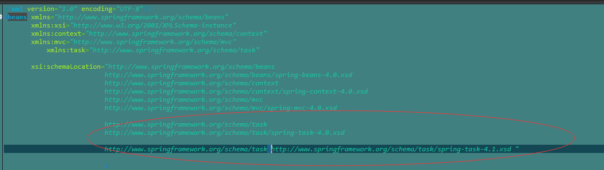

简单配置
在springMVC.xml文件中 beans xmlns=后 添加
http://www.springframework.org/schema/task
http://www.springframework.org/schema/task/spring-task-4.0.xsd
http://www.springframework.org/schema/task
http://www.springframework.org/schema/task/spring-task-4.1.xsd 这是两个一个是4.0一个是4.1而且 选择其中一个即可

<!-- 定时任务开启 scheduler调度 executor异步-->
<task:annotation-driven scheduler="myScheduler" executor="asyncExecutor"/>
<!-- 定时任务线程数为5 -->
<task:scheduler id="myScheduler" pool-size="5"/>
<!-- 异步任务线程池大小5 -->
<task:executor id="asyncExecutor" pool-size="10"/>
调度类
package spring.scheduledTest;
import java.text.DateFormat;
import java.text.SimpleDateFormat;
import java.util.Date;
import org.springframework.scheduling.annotation.Async;
import org.springframework.scheduling.annotation.Scheduled;
import org.springframework.stereotype.Component;
@Component
public class ScheduledTestClass5m {
@Scheduled(cron="0/5 * * * * ? ") //每5秒执行一次顺序为（秒 分钟 小时 日 月 星期 年）参考在线生成cron
@Async//这个注解为异步 如果不加这个标签该方法如果堵塞就无法没五秒一次(5秒加堵塞时间) 因为线程被堵塞了 如果使用异步则该线程不管堵塞与否都会运行 因为他是再创建线程运行 如果设置的异步线程池不够会出现（如堵塞时间为6秒 就6秒一运行）
//这个类里面就可以写业务逻辑处理代码
public void bTask(){
DateFormat sdf = new SimpleDateFormat("yyyy-MM-dd HH:mm:ss");
// System.out.println(sdf.format(new Date()) +"1*********B任务每5秒执行一次进入测试"+Thread.currentThread().getName());
try {
Thread.sleep(6000);
// int i=10/0;
} catch (InterruptedException e) {
// TODO Auto-generated catch block
System.out.println(sdf.format(new Date()));
e.printStackTrace();
}
System.out.println(sdf.format(new Date()) +"*********B任务每5秒执行一次进入测试"+Thread.currentThread().getName());
}
}